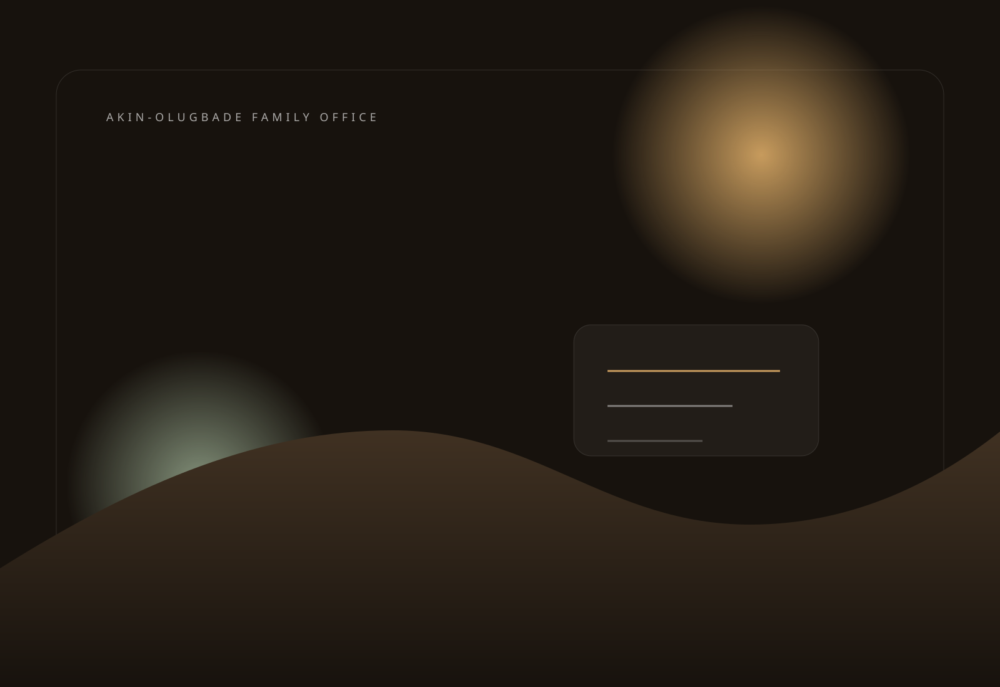
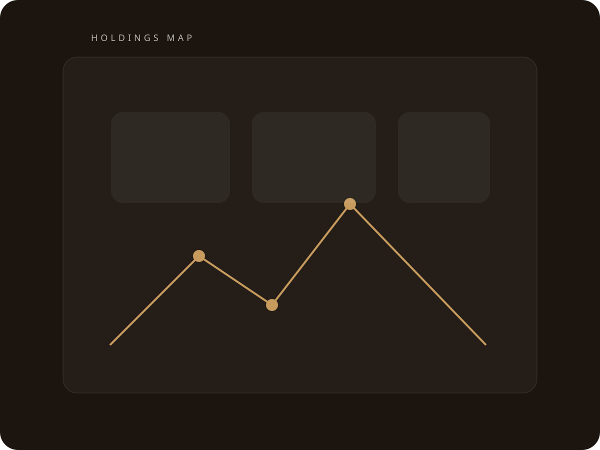

Family Office Platform
A modern home for governance, enduring assets, and family continuity.
This site is designed as the central digital seat of the Akin-Olugbade family office: a place for board materials, operating updates, holdings visibility, project archives, lineage records, and the quiet institutional infrastructure a serious family requires.
Office
Institutional where it should be. Personal where it must be.
The office layer is built to support OBA Group governance, family decision-making, and long-horizon oversight across current holdings and future initiatives. It is designed to present the family with calm structure rather than administrative clutter.
Holdings and Projects
A portfolio view shaped around stewardship, not publicity.
The site can act as the main index for real asset positions, development workstreams, warehousing platforms, power projects, and adjacent ventures. The goal is a coherent operational picture for family principals, not a generic corporate showcase.
Real estate and land positions
Warehousing and industrial activity
Power generation and infrastructure
Strategic private ventures

Heritage Layer
A family archive should feel living, not dusty.
Private Office
Built to become the family’s permanent digital headquarters.
Governance, holdings, and heritage in one composed system.